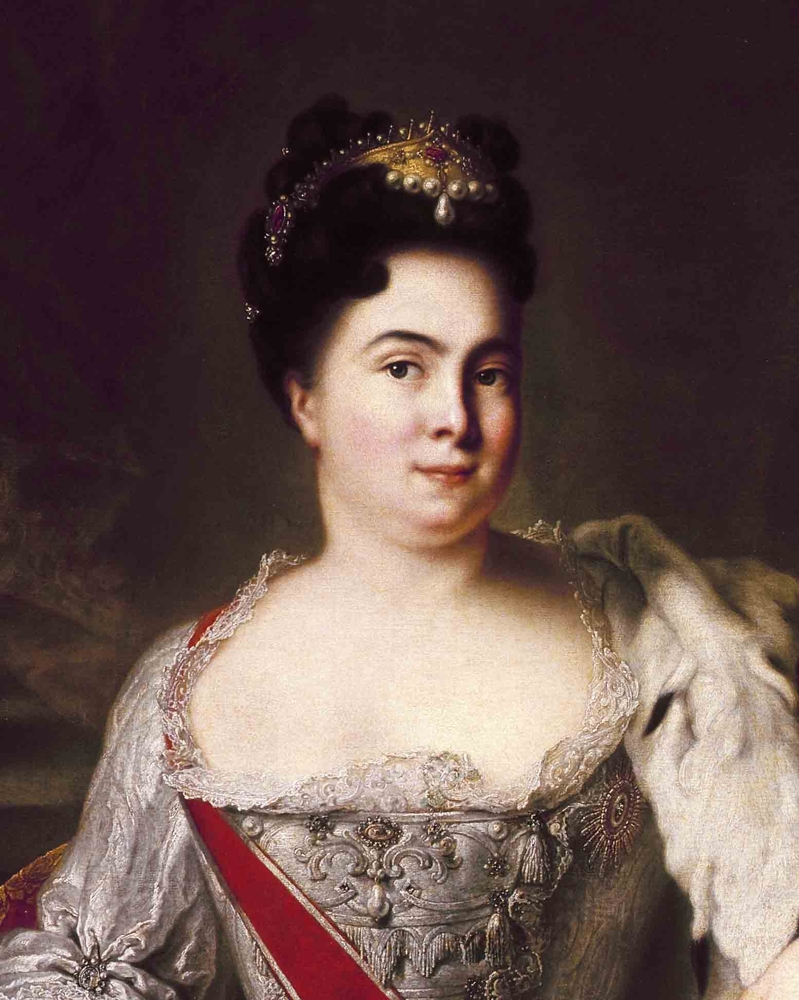
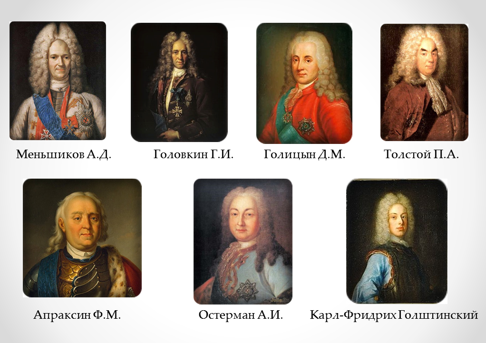
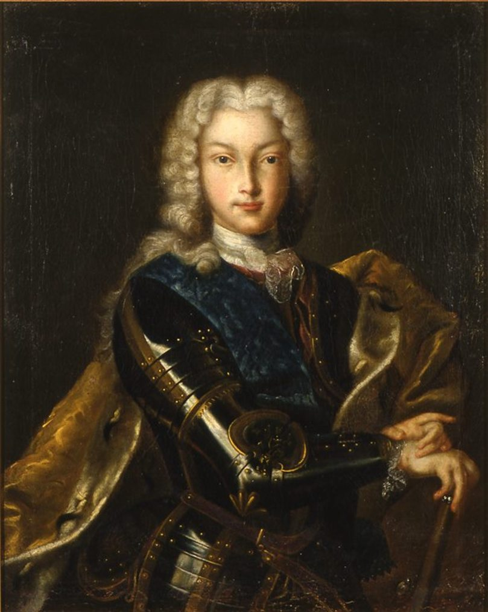
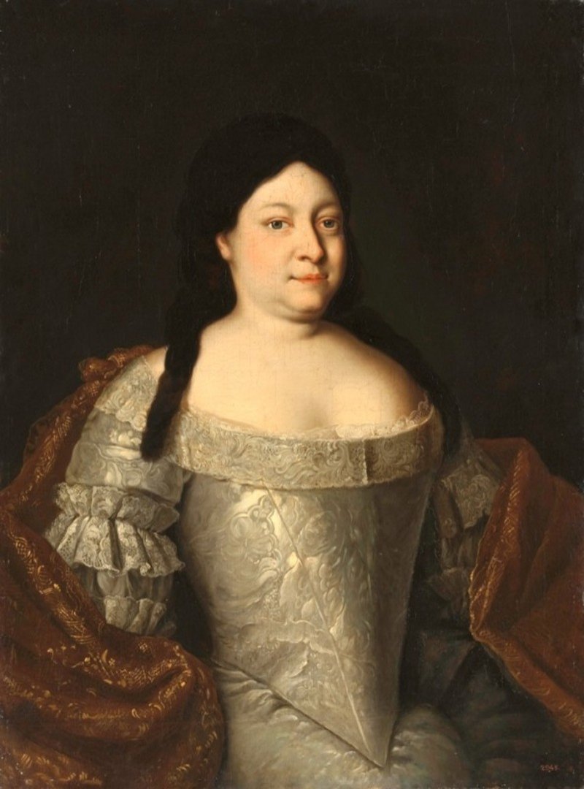
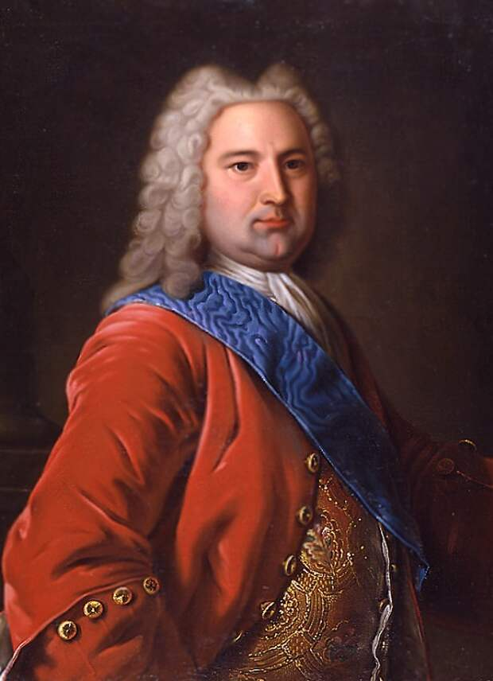
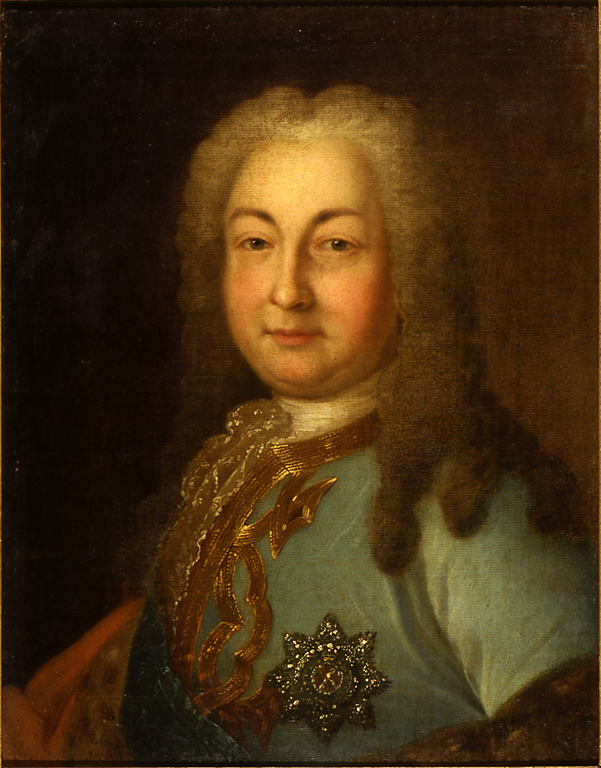
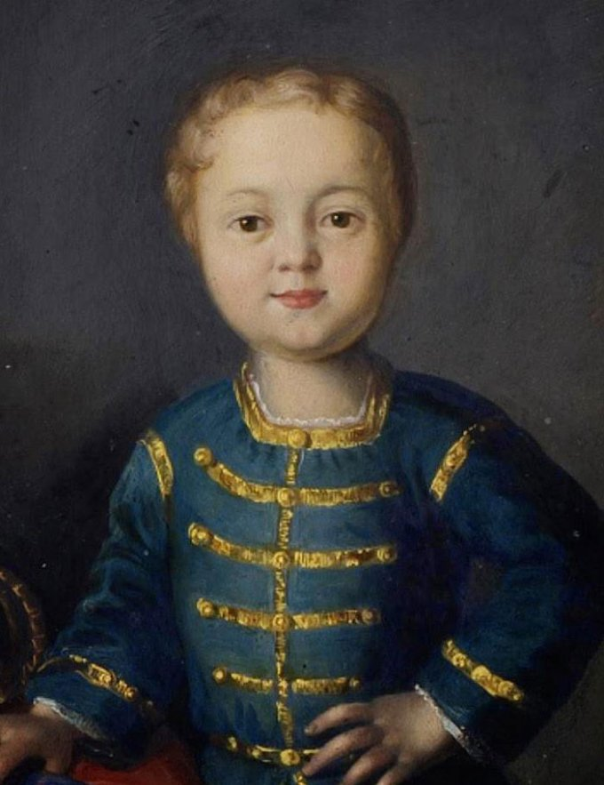
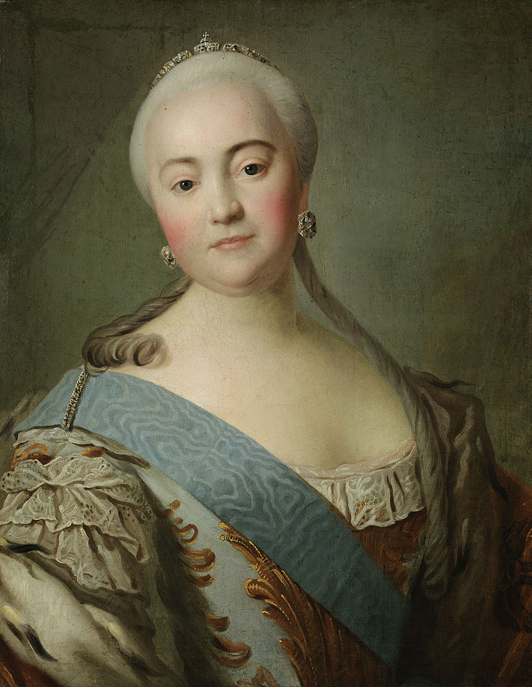
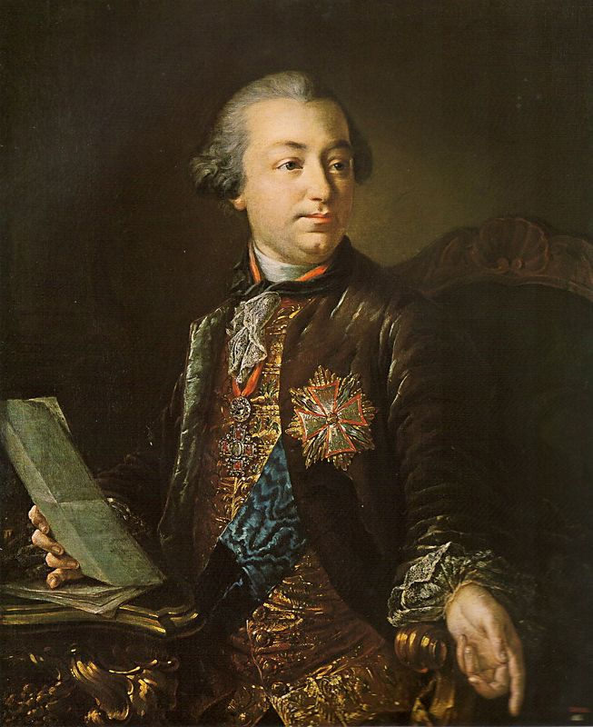
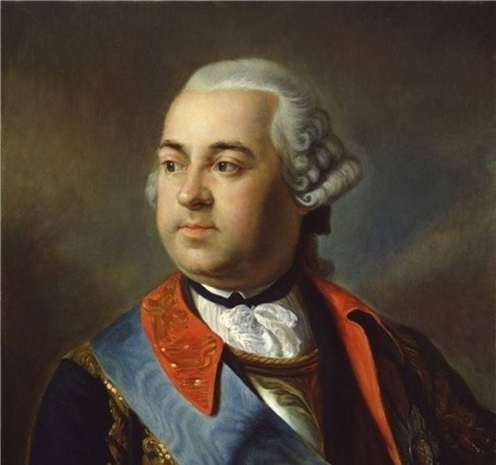

Тест
Рудик-красава?
Правление Екатерины I (1721-1725)
В феврале 1722 года Петр I издал указ о престолонаследии, который гласил, что наследником может стать тот, кого назначит правитель. Через 3 года он умер, не указав преемника. С этого момента началась эпоха дворцовых переворотов. Сразу же после этого началась борьба за власть. На престол претендовали вдова Петра I, Екатерина Алексеевна, и его внук, Петр Алексеевич, сын убитого Алексея Петровича. Екатерину поддерживали соратники Петра I: Меньшиков, Ягужинский, Толстой и другие. На стороне Петра Алексеевича были представители старой аристократии в лице князя Д.М. Голицына. В результате переворота, при помощи гвардии, к власти пришла Екатерина I.

Екатерина была не способна управлять страной, поэтому фактически вся власть в годы её правления находилась в руках А.Д. Меньшикова. В это время продолжалась политика Петра 1: была открыта Академия наук и отправлена экспедиция В.Беринга на Камчатку. Был создан Верховный Тайный Совет (1726 год) – совещательный орган при императрице во главе с А.Д.Меньшиковым. Однако, ни к каким значимым реформам это не привело. Продолжалось закрепощение крестьян, теперь они не могли самостоятельно уходить на заработки.
В сфере внешней политики правление Екатерины I было довольно спокойным. Главной задачей было поддержание мира. Главным успехом внешней политики Екатерины было заключение Венского союзного договора с Габсбургской монархией. В момент правления Екатерины I страна не утратила ни одной земли и не велось крупных войн. За время правления Екатерины 1 не было привнесено каких-либо значимых преобразований. Основная часть реформ либо была бесполезна и не имела практически никакого смысла, либо была продолжением политики Петра 1.

Правление Петра II (1727-1730)
По завещанию Екатерины I, Петр Алексеевич провозглашался наследником престола, и со смертью императрицы он стал новым правителем России. В этом же завещание была статья о том, что русская знать должна была всячески способствовать в будущем браку Петра Алексеевича и дочери А.Д. Мельникова. Тот же в свою очередь пытался сохранить свои функции регента. Однако власть Меньшикова длилась недолго, и вскоре Петр II переехал в Москву, перенеся туда столицу, и отослав его в Тобольский край. Вскоре Петр II издал 2 манифеста: в первом манифесте говорилось о списывании некоторых долгов с крестьян, а во втором были розданы различные привилегии дворянской верхушке. В 1727 году было восстановлено гетманство на Украине и введён сейм в Лифляндии. Была поведена реформа местного самоуправления и магистраты перешли под управление губернаторов. В стране набирал обороты кризис, из-за чего идея В.Беринга наладить торговые связи также не увенчалась успехом и была отложена на потом.
Во внешней политике основной целью оставалось сохранение мирных отношений с другими странами. Были попытки наладить отношения с Англией и Францией, однако они были тщетны. На восточном направлении были установлены границы и решены основные с империей Цин. Политика Петра II, как и Екатерины I имела преимущественно преемственный характер, однако были и самостоятельные начинания. Ближе к концу правления Петра Алексеевича начался кризис и серьезные проблемы с преступностью и коррупцией. После ссылки Меньшикова дворянская верхушка стала оказывать менее сильное воздействие на политику Петра II, что позволило ему принимать более самостоятельные решения.
Правление Анны Иоанновны (1730-1740)
Петр II скончался неожиданно от оспы. Оказалось, что наследника по мужской линии у Романовых больше нет, да и завещания никакого монарх не оставил. По сути выбирали между Елизаветой – дочерью Петра от Екатерина I и Анной – дочерь Ивана V. По сути это был выбор между ветвями Нарышкиных или Милославских. Елизавета родилась до брака Петра и Екатерины, это вызывало опасения у аристократии, ее считали незаконнорожденной. А вот Анна стала кандидатурой весьма удобной – законнорожденная, вдова, не амбициозная, без претензий. «Верховники» остановили свой выбор на ней.

При вступлении на престол Анна подписала кондиции – специальный документ, который ограничивал ее власть. Его условия обсуждало около 2000 дворян, они были следующими: · Не выходить замуж. · Не назначать себе преемника. · Сохранить Верховный тайный совет. · Не объявлять войны и не заключать мира. · Не вводить новые налоги. · Не ведать армией и передать гвардию в полное подчинение Верховникам. · Не распоряжаться казной и полностью удовлетворяться тому финансовому содержанию, которое для нее определит ВТС. · Не лишать дворян жизни, чести и имений.
Анна подписала кондиции, будучи в Митаве. Еще до приезда в Москву она узнала, что не все дворяне довольны этим документом. 25 февраля 1740 г. в Лефортовский дворец к императрице пришли недовольные дворяне, чуть позже туда явилась и гвардия. Стали возмущаться, что кондиции, составленные «Верховниками», не учитывают их интересы. Постепенно стала проскальзывать мысль о том, что есть законная государыня, а кондиции вовсе и не нужны. Тогда Анна Иоанновна просто их разорвала.
Правление Анна Иоанновны кратко характеризуется как время частой смены кадров, особенно хорошо это было видно в первые два года правления. Особо видную роль при императрице занимает граф А. И. Остерман, который осуществлял руководство по факту внутренней и внешней политикой в правление Анны. Хотя традиционно с императрицей ассоциируют имя Э. Бирона, появляется такое понятие как «Бироновщина».


Внутренняя политика: 1. В марте 1730 г. императрица подписала манифест об упразднении Верховного Тайного Совета, после этого она восстановила в правах Сенат; 2. Отмена петровского указа о единонаследии от 1714 г., согласно этому указу запрещалось дробить имения для наследников; 3. Ноябрь 1731 г. – образован Кабинет министров, данный орган готовил решения императрицы документально. Все именные указы и резолюции государыни объявлял Кабинет министров. А также он осуществлял руководство Сенатом и Синодом; 4. 1731 г. – основание первого в Российской империи Шляхетского кадетского корпуса – сухопутного, морской будет основан позже. Корпус занимался подготовкой военнослужащих и государственных чиновников; 5. 31 декабря 1736 г. – срок службы дворян с пожизненного срока сокращался до 25-ти лет. Но до 1740 г. действие манифеста было остановлено, потому что шла война с Турцией;Внешняя политика кратко представлена следующими событиями: 1. Участие России в войне за «Польское наследство» - две противоборствующие коалиции боролись за воцарение в Польше своего ставленника. Россия с Австрией выступали за курфюрста саксонского Фридриха – сына Августа II. А Франция, Испания и Сардиния поддерживали Станислава Лещинского. В итоге Россия и Австрия одержали победу, Фридрих стал королем Польши; 2. Отношения с Персией. После прихода к власти Надир-шаха Анна Иоанновна пошла на территориальные уступки. В течение 1732-1735 гг. Персии были возвращены Прикаспийские земли, которые ранее были завоеваны Петром I. Россия готовилась к войне с Турцией, поэтому важно было уладить отношения с Персией для более спокойного ведения войны. 3. Русско-Турецкая война 1735-1739 гг. Основные действующие лица со стороны России – фельдмаршал Б.Х. Миних и П.П. Ласси. Война завершилась подписанием Белградского мира – Россия получила территории вдоль среднего течение Днепра, Азов, право строить крепости на острове Черкасе.
Правление Ивана VI (1740-1741)
Иван VI стал императором согласно завещанию Анны Иоановны, которая не имела детей и отдавала престол отпрыскам своей племянницы, боясь, что страной станут управлять будущие потомки Петра I. Младенец стал императором в возрасте 2 месяцев, поэтому ему был назначен регент – герцог Бирон. Однако всего спустя два месяца Бирон был арестован и регентом нового царя стала его собственная мать. Не способная к управлению страной Анна Леопольдовна допустила приход к власти сторонников Петра I. Всего через год после формального начала царствования Ивана 6 произошел государственный переворот, в результате которого император и его приближенные были арестованы. К власти пришла дочь Петра I – Елизавета Петровна
Правление Елизаветы Петровны (1741-1761)
Гвардия с большим энтузиазмом поддержала Елизавету Петровну в ее стремлении взять власть, видя в дочери Петра I надежду на восстановление петровских порядков. В ноябре 1741 г. гвардейцы во главе с Елизаветой пришли к Зимнему дворцу и практически без какого-либо сопротивления арестовали фактически правившую Анну Леопольдовну, ее мужа Антона Ульриха и их малолетнего сына Ивана VI. Прежние фавориты, служившие Анне Иоанновне и Анне Леопольдовне, были отправлены в ссылку.

Правление Елизаветы Петровны сопровождалось активной деятельностью двух ее главных фаворитов – братьев Шуваловых. П.И. Шувалов отвечал за социально-экономические и политические преобразования, а И.И. Шувалов – за развитие науки, культуры и образования.


Императрица Елизавета Петровна не раз провозглашала, что продолжает политику Петра Великого. Была восстановлена роль Сената, Берг- и Мануфактур-коллегии, Главный магистрат. Кабинет министров упразднён. Сенат получил право законодательной инициативы. Во время Семилетней войны возникло постоянно действовавшее совещание, стоявшее над сенатом, — Конференция при Высочайшем дворе. В работе конференции участвовали руководители военного и дипломатического ведомств, а также лица, специально приглашённые императрицей. Незаметной стала деятельность Тайной канцелярии.
В конце 1740-х — первой половине 1750-х годов по инициативе Петра Шувалова был осуществлён ряд серьёзных преобразований. Указ об отмене внутренних таможенных сборов был подписан Елизаветой Петровной 31 декабря 1753 года. В 1754 году сенат принял разработанное Шуваловым постановление об уничтожении внутренних таможенных пошлин и мелочных сборов. Это привело к значительному оживлению торговых связей между регионами. Были основаны первые русские банки — Дворянский, Купеческий и Медный. Права дворян были расширены. В период своей службы они могли брать долговременные отпуска. За дворянами в 1746 году было закреплено право владеть землей и крестьянами, а в 1760 году помещикам дали право ссылать их в Сибирь. При Елизавете Петровне был взлет развития русской культуры. М. В. Ломоносов начал публиковать свои труды, появился первый полный географический атлас России, первая химическая лаборатория, открылась газета «Московские ведомости», в Москве были утверждены университет и 2 гимназии, а в Петербурге – первый русский государственный театр. Во внешней политике императрица Елизавета Петровна также придерживалась принципов Петра I. Когда она вступила на престол, страна вела войну со Швецией. В 1743 году она завершилась, Российская империя получила часть Финляндии. Мощь Пруссии росла, поэтому Российская империя вступила в антипрусский союз с Австрией, в результате страна оказалась участником Семилетней войны. Действия Российской империи были вполне успешны: русская армия оккупировала Восточную Пруссию и даже ненадолго заняла Берлин. Еще в 1742 г. Елизавета Петровна назначила преемником своего племянника Карла Петера Ульриха Голштинского. Именно он, в результате скоропостижной кончины императрицы в конце 1761 г., пришел к власти в России под именем Петра III.
25 декабря 1761 г. по старому или 5 января 1762 г. по новому стилю умерла императрица Елизавета Петровна. Петр Федорович по завещанию покойной стал новым императором России под именем Петра III. За свое короткое полугодовое правление Петр не успел короноваться, однако, был коронован посмертно своим сыном Павлом I в 1796 г.
Правление Петра III (1762)
25 декабря 1761 г. по старому или 5 января 1762 г. по новому стилю умерла императрица Елизавета Петровна. Петр Федорович по завещанию покойной стал новым императором России под именем Петра III. За свое короткое полугодовое правление Петр не успел короноваться, однако, был коронован посмертно своим сыном Павлом I в 1796 г.

Политическими кумирами Петра III были Петр I и правитель Пруссии Фридрих II. Они и стали своеобразными ориентирами в политике Петра III. Все предыдущие правители перепоручали управление страной своим фаворитам, а вот Петр III с невероятным усердием стремился руководить страной только сам. Высокая государственная активность императора проявилась и в том, что за полгода своего правления он успел издать около 190 указов. При Петре III была ликвидирована Тайная канцелярия, занимавшаяся прежде политическим сыском, начался процесс секуляризации церковных земель, поощрялась предпринимательская деятельность и даже была попытка начать выпускать первые в России бумажные деньги – ассигнации. Петр III стал одним из немногих императоров России XVIII века, задумавшимся о положении крестьян. Так, помещикам было запрещено теперь убивать крестьян под страхом пожизненной ссылки. Однако, это была лишь маленькая вспышка света во тьме крепостничества, потому что в дальнейшем крепостной гнет только усилился: помещики могли свободно переселять крестьян из одного уезда в другой, был значительно осложнен переход крестьян в купеческое сословие.
Но, вероятно, главным документом всего правления Петра III стал Манифест о вольности дворянства 1762 г. Если при Петре I дворяне обязаны были всю жизнь служить государству, а при Анне Иоанновне могли уходить в отставку спустя 25 лет службы, то теперь, согласно Манифесту, дворяне могли не служить вообще, превращаясь в абсолютно привилегированный слой населения. Петр III, став полновластным монархом, подписал с Пруссией мирный договор. Мир был заключен на унизительных условиях для России. Наследник Елизаветы отменил все завоевания Российской Империи и вышел из Семилетней войны, наплевав на пролитую русскую кровь и оставив союзников без поддержки. Петр Федорович очень быстро настроил против себя верхушку российского общества. 28 июня 1762 г. Петр III выехал в Петергоф для отдыха и развлечений. В этот же день в столице в отсутствии императора состоялась присяга Екатерине, ставшей теперь императрицей Екатериной II. Петр III узнал о том, что фактически заочно потерял трон. Вскоре его арестовали и заставили подписать отречение от престола.